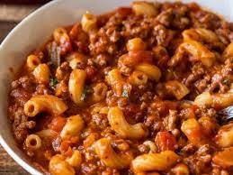

Goulash

Description
Goulash is filled with ground beef, onion, and macarooni noodles in a tomatoo-based sauce. It's real good.
Allergens: None
Ingredients
- 1 lb - Ground Beef
- 1 Cup - Sweet Onion, chopped
- 2 Cans - Tomato Soup
- 1 Box - Elbox Macaroni
- 2 Cups - Cheddar Cheese, shredded
- 1 Can - Kernel Corn
- Kosher Salt and Black Pepper
Steps
- Preheat overn to 400 degrees. Cook pasta, drain, and place into a large mixing bowl.
- Cook ground beef and onion together in a pan. Once browned, drain excess fat and add to the mixing bowl.
- Mix pasta and beef. Add soup, corn, salt, and pepper. Add 1/2 Cup of cheese.
- Once mixed thoroughly, place in a baking idsh and sprinkle the rest of the cheese on top. Bake for 20-25 minutes.
- Serve in a bowl or on a plate.